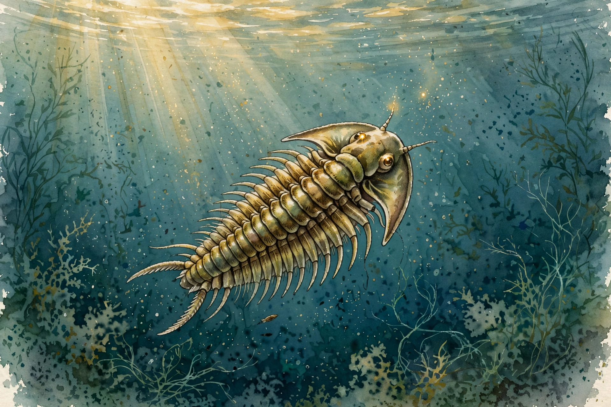

Huberman Lab · Episode 7 · Companion
AI That Enriches Humanity
Fei-Fei Li led ImageNet, the dataset that ignited modern AI. She tells the inside story: the 2006 insight, the 15 million images, the 2012 convergence, and why the recipe never changed. Plus the gray cup: the dataset AI will never train on. This companion follows the conversation in order.

Illustration. First light, 540 million years ago: vision as the cornerstone of intelligence. Made for this page. AI-generated watercolor in a New Yorker style, made for this page. It carries no words or labels.
Watch. The official episode video on youtube-nocookie, the only external dependency on this page. Use the chapter menu above to jump to any section of this companion as you listen.
The Wisdom Index: every nugget in this companion
540 million years of seeing
SOURCE FACT Li opens 540 million years ago, when simple sea animals like trilobites developed vision. Before that there was very little sensing: touch existed, but no hearing, no smell, and no nervous system as we know it. INTERPRETATION She frames vision as the sense that made intelligence possible at all. Two facts anchor this: about half the human brain is involved in visual function, and children are visual before they are verbal.
Nugget 1 · Vision is the cornerstone
SOURCE FACT Half the brain serves vision. Children see before they speak. INTERPRETATION Any theory of intelligence that ignores vision ignores half the hardware.
SOURCE FACT The computational story starts in the early 1950s with Hubel and Wiesel. They recorded visual cells in the mammalian brain and found a hierarchy: layers of cells stacked on each other, passing information upward from light at the retina to the recognition of a shape. That architecture inspired the neural network. The episode's definition: a neural network is a stack of simple units, each a very simple function taking inputs and producing an output. Biological neurons are far more complex than these units. The artificial version is deliberately simple.
Nugget 2 · The hierarchy, twice
SOURCE FACT Biology stacks cells from retina to shape. Silicon stacks simple functions from pixels to object names. INTERPRETATION Stack simple units in a hierarchy, and recognition emerges. Same architecture, biology first, silicon second.
ImageNet: the data insight
SOURCE FACT In 2006 Li was a first-year faculty member at Princeton. The field tried algorithm after algorithm: Bayesian methods, support vector machines, early neural nets. Nothing worked well enough, and everyone blamed the algorithm. Li turned to the cognitive neuroscience literature and asked how much humans actually see. The numbers stunned: by age six, humans learn tens of thousands of object categories. Babies see from birth and are inundated with visual data. Her conjecture: the bottleneck was not the algorithm. It was the fuel, the lack of data.
Nugget 3 · The bottleneck was fuel
SOURCE FACT The field optimized algorithms. Li measured what humans actually see, tens of thousands of categories by age six, and concluded data was the missing ingredient. INTERPRETATION When every known method fails, question the input before the method.
SOURCE FACT The result was ImageNet: the first internet-scale dataset for AI, 15 million images, built to drive machines to recognize everyday objects. Then three elements converged: data (the 15 million images), maturing neural-network algorithms, and GPU computing. By 2012 the convergence became the defining moment of modern AI. The ImageNet challenge, run from 2010, gave the field a public scoreboard: 1,000 object categories, a test set of more than 1 million images, name the main object in the picture. A Stanford graduate student later benchmarked human performance at roughly 4 percent error, while random chance on 1,000 categories is 0.1 percent correct.
Nugget 4 · The triad
SOURCE FACT Data plus algorithms plus compute, together in 2012. Each alone was insufficient. INTERPRETATION Revolutions are convergences, not inventions. This triad recurs across the whole episode.
The recipe does not change
SOURCE FACT Li's punchline: the recipe has not changed since 2012. The transformer paper arrived around 2016 to 2017, a more powerful neural-network architecture. The field that advanced next was not vision but natural language processing, because the internet offered even more text data than image data. Same triad: better architecture, more data (text), more powerful GPUs. Companies like OpenAI and Google rallied around it. Five years later, 2017 to 2022, came the ChatGPT moment.
Nugget 5 · Same recipe, new data type
SOURCE FACT Transformers plus text data plus GPUs produced ChatGPT. INTERPRETATION When the recipe is stable, bet on the next data type, not the next architecture.
SOURCE FACT Video entered the training data around 2023. In January 2024, Sora was released: ask for a cat chasing a mouse and get a short clip of plausible cat movement. Li's analysis: this is not as revolutionary as it looks. It is the same neural-network era. What changed is the data: video tokenized and processed at scale. Tokenization chops a continuous input into small discrete pieces called tokens. The model reads the pieces as a sequence. The algorithm does not know cat muscle anatomy. It saw so many cat videos that it knows what plausible movement looks like. Humans do the same: most of us cannot name a cat's muscles, but we know what running looks like because we saw it ten thousand times.
Nugget 6 · Tokenization
SOURCE FACT Tokenization chops continuous input into discrete tokens. The model reads them as a sequence. Video tokenization chops frames into token blocks processed like words. INTERPRETATION Sora statistics, not anatomy: millions of examples, not a model of cat muscle.
The gray cup
SOURCE FACT Li's most personal argument about AI's limits. She holds up a cup: others see a great cup, but for her it might evoke a childhood moment shared only with her best friend. That memory is completely inaccessible. It was never uploaded to the internet. No matter how mighty AI becomes, it cannot access it. The general principle: AI learns from data. Emotion, personal history, and private meaning are not in the data.
That is a completely inaccessible piece of information in my brain that is never uploaded on the internet
Fei-Fei Li, on the gray cup.
Nugget 7 · The gray cup
SOURCE FACT A cup's childhood meaning, shared with one friend, was never uploaded and cannot be reached by any model. INTERPRETATION The interior of a human life is the largest dataset AI will never train on.
SOURCE FACT Li connects this to her earlier line: features of brain function are inaccessible to AI because “they’ve never been uploaded to the internet”. On creativity, her position: AI combines existing elements in novel ways, which counts as a kind of creativity. But some problems need solutions that have not been invented. Her conjecture is hybrid: humans working alongside AI solve the problems whose solutions do not exist yet.
Nugget 8 · Hybrid creativity
SOURCE FACT AI is combinatorial. The mathematician's test case needs solutions that do not exist yet. INTERPRETATION The frontier belongs to humans working alongside AI, not to either alone.
The liver surgery test
SOURCE FACT Li's father had liver surgery at Stanford with the da Vinci robot system, driven by an expert surgeon. Deep human-machine collaboration. Afterward she asked the surgeon: if we aggregated every liver surgery ever performed, could we train an AI to do it alone? The answer was not clear. The liver is extremely vascular, every liver is different, and the number of liver surgeries per year is limited. Even aggregating the world's cases might not supply enough patterns to train the algorithm. The outcome: 10 times less blood lost than a typical surgery, thanks to the robot's laparoscopic capability.
Nugget 9 · Count the patterns
SOURCE FACT Where patterns are abundant (faces, chat text), AI alone works. Where they are scarce (liver surgery), the human leads and AI assists. INTERPRETATION Count the patterns before choosing the autonomy level. Abundant patterns license autonomy. Scarce patterns require the human in the lead.
SOURCE FACT The reverse is also true: the human alone is limited by how many surgeries one surgeon can train on. The frontier question Li poses: can we build an artificial liver simulation to train on infinite possibilities? That is open science, waiting ahead. On intuition, Li reframes the supposedly mystical trait: intuition is experience over time, a dataset coupled to bodily and brain sensations and prediction cues. Machines can learn pattern-based intuition. Inner states like motivation may be the gray-cup problem again.
Agency: who decides the future
SOURCE FACT Li directs the Stanford Institute for Human-Centered Artificial Intelligence. Her core political claim: humanity must have the agency to decide how the future is imagined. It cannot be one company or one investor deciding the world fills with metal robots. The public is currently reactive, watching others decide. The multi-stakeholder alternative: society proactively designs the future together. On regulation, AI must mature like other powerful technologies: professional norms, education (computer scientists are not trained in ethics, and Stanford is now adding it), and government guardrails fitted to the domain. Her warning: one person or a few people from industry telling everybody what to do would be dangerous, because market forces are not societal norms.
Nugget 10 · Agency
SOURCE FACT Three pillars: agency (society designs together), norms (ethics education, professional standards), guardrails (domain-fitted regulation). INTERPRETATION Market forces are not societal norms. Who is in the room is the whole question.
SOURCE FACT Li's next frontier is embodied AI: spatial and physical intelligence beyond language. Humans developed preverbally, and evolution ran 500 million years without verbal communication. Her vehicle: World Labs, co-founded at the beginning of 2024, building foundation models for generating 3D and 4D worlds for creators, robot training, architecture, healthcare, and education. Her timeline: not 12 months (too fast for hardware), but think 30 years for the full vision, with robots already on the streets today.
Nugget 11 · The eldercare test
SOURCE FACT Li cares for two advanced-aged, very sick parents who do not speak English. A robot that relieved the physical labor would not replace family responsibility, love, or communication. INTERPRETATION The human-centered test: does the machine serve the human's life, or replace it?
Takeaways
- Li's 2006 insight: the bottleneck was data, not algorithms. ImageNet's 15 million images lit the fuse of modern AI.
- The 2012 convergence: data plus algorithms plus GPUs. The recipe has not changed since. Transformers, ChatGPT, and Sora are the same triad at new scale.
- Count the patterns before setting autonomy. Abundant patterns license AI autonomy. Scarce patterns need the human in the lead.
- The gray cup: private emotional history was never uploaded and never will be. It is the largest dataset AI will never train on.
- Human-centered AI means agency: society designs the future together, not one company or one investor.